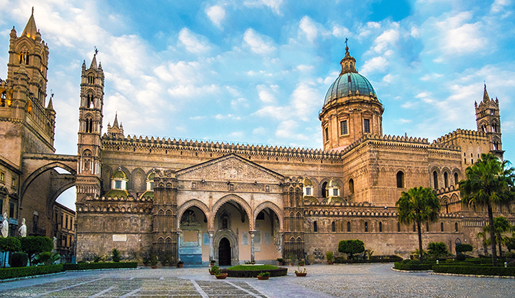
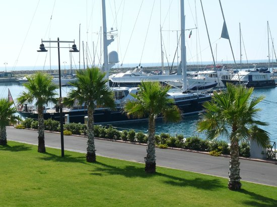
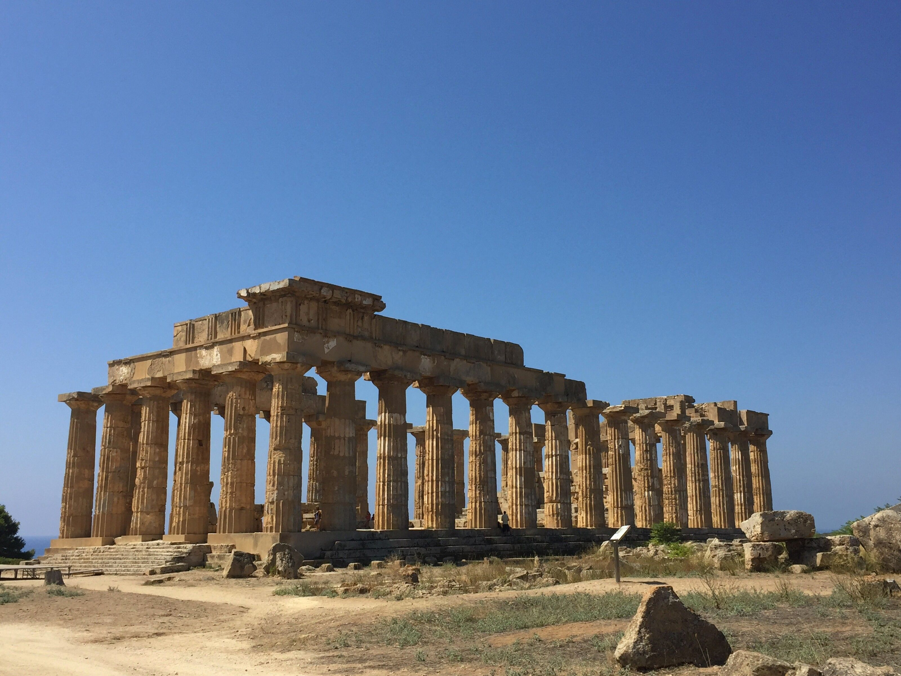

Complessa e articolata, la cucina siciliana è sovente ritenuta la più ricca di specialità e la più scenografica d’Italia. Alcuni dei cibi più noti, diffusi non solo a livello regionale ma addirittura mondiale, sono la cassata siciliana, il cannolo siciliano, la granita e le arancine. Grazie al suo clima mite, l’isola è ricca di spezie e piante aromatiche; origano, menta, rosmarino, fanno quotidianamente parte dei condimenti siculi. Il terreno fertile produce arance e limoni in grande quantità, al punto tale che la Sicilia è spesso soprannominata la terra dei limoni o la terra delle arance. Mandorle, ficodindia, pistacchio e olive sono gli altri suoi simboli culinari nei quali eccelle.